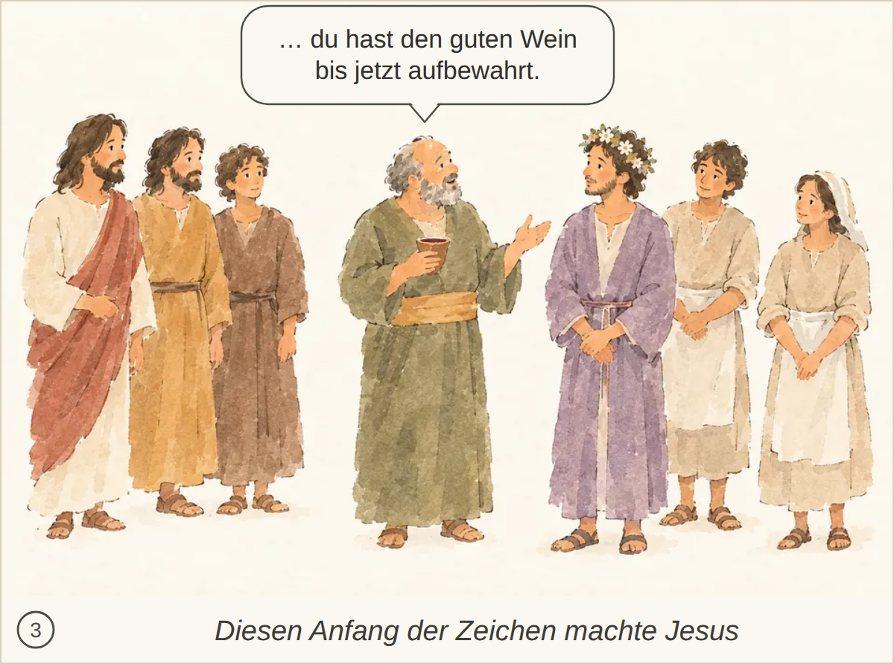
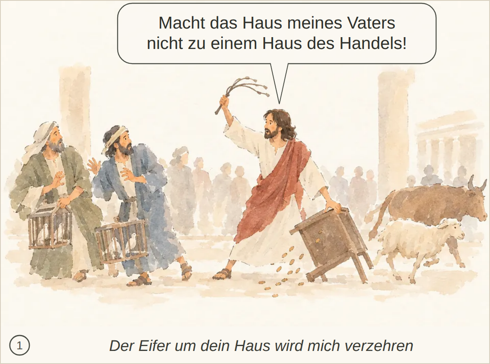
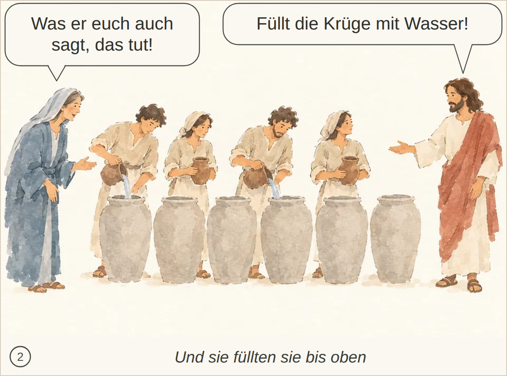
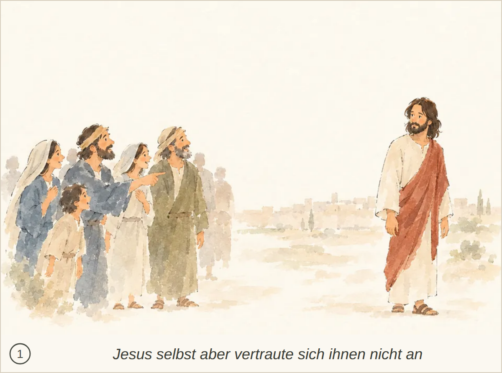
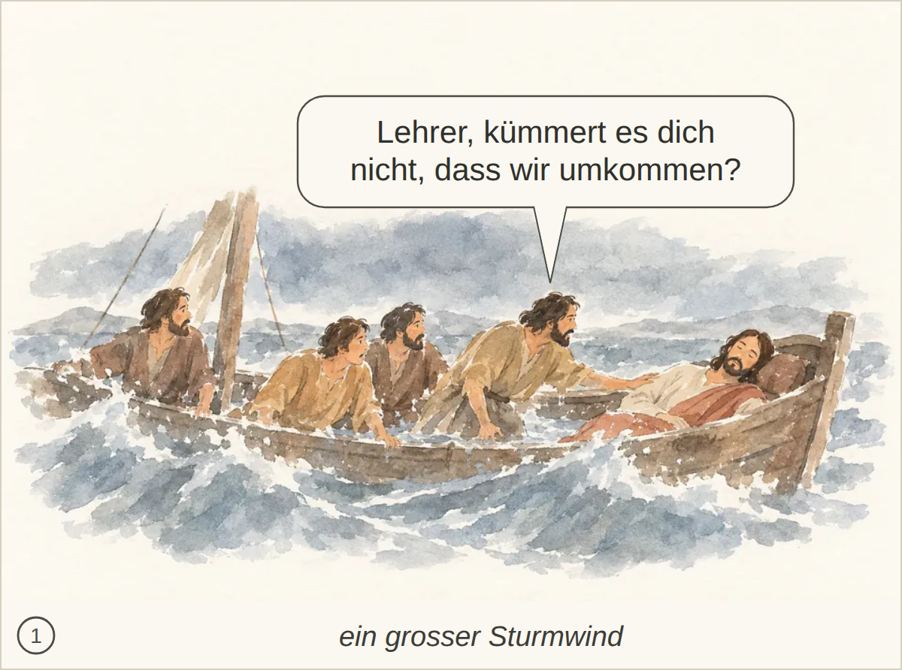
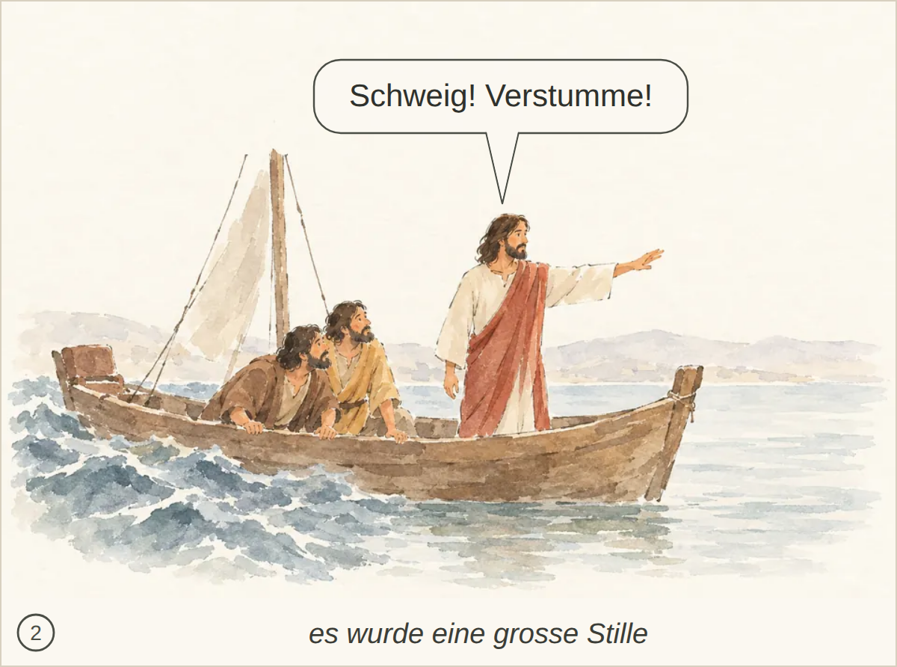
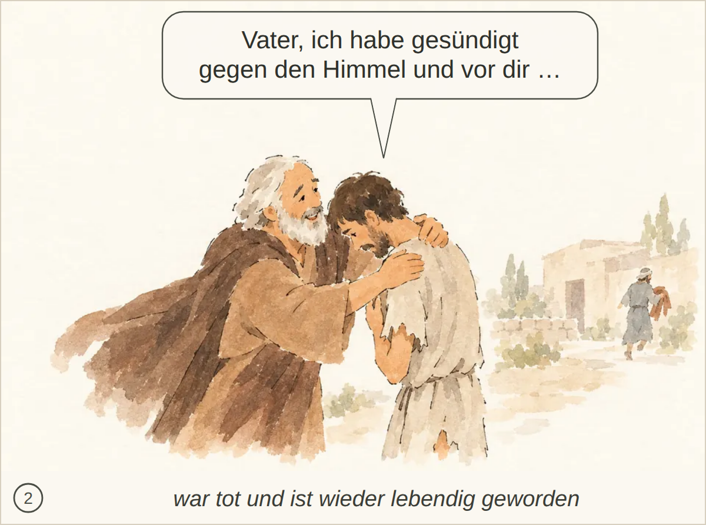
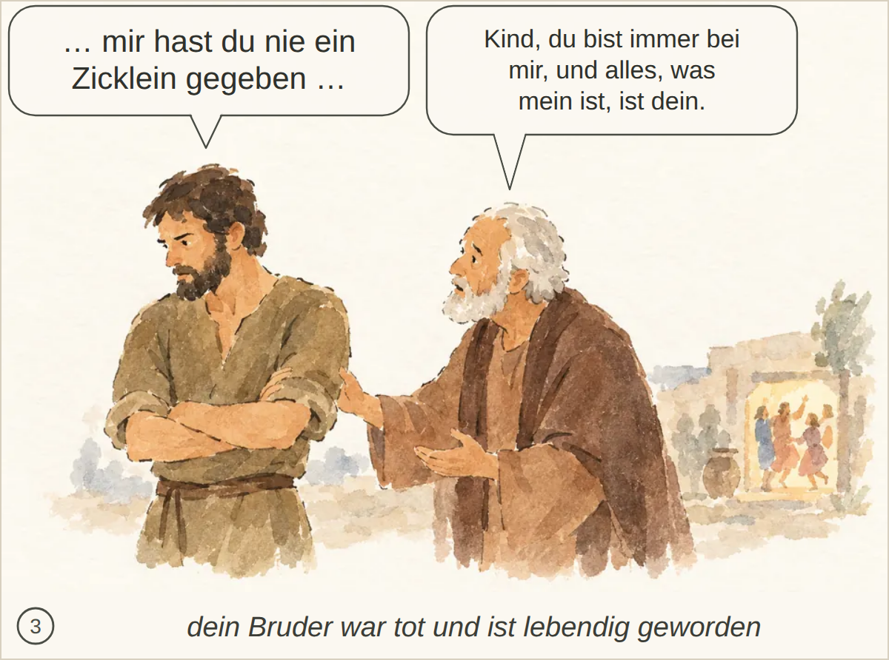
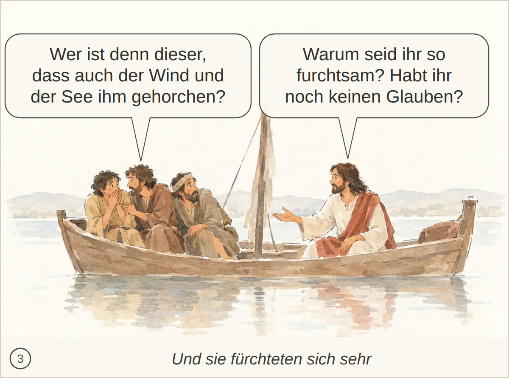

Kachel: bestanden, Kern 2 Nichts.
Kachel: bestanden, Kern 2 Nichts.

Kachel: bestanden, Kern 2 Nichts Wesentliches; der Speisemeister mit Becher spricht zum Bräutigam über den guten Wein. Der Glaube der Jünger ist höchstens nicht ausdrücklich sichtbar.

Kachel: bestanden, Kern 2 Nichts Wesentliches fehlt.

Kachel: bestanden, Kern 2 Nichts Wesentliches fehlt.

Kachel: bestanden, Kern 1 Die Szene wird nur allgemein als Menschen bei Jesus erkannt. Es fehlt klar, dass viele wegen der Zeichen glauben und dass Jesus sich ihnen nicht anvertraut, weil er alle Menschen kennt.

Kachel: bestanden, Kern 2 Nichts Wesentliches; der Auftrag, etwas zu schöpfen und zum Speisemeister zu bringen, wird nicht erwähnt.

Kachel: bestanden, Kern 2 Nichts Wesentliches; Passa/Jerusalem und die Zeichen sind im Bild kaum erkennbar.

Kachel: bestanden, Kern 2 Nichts Wesentliches fehlt.

Kachel: bestanden, Kern 2 Nichts Wesentliches; die grosse Stille nach dem Befehl wird nur angedeutet.

Kachel: bestanden, Kern 2 Nichts Wesentliches fehlt; die Szene beim Schweinehüten und der Entschluss zur Rückkehr zum Vater werden klar erkannt.

Kachel: bestanden, Kern 2 Kuss sowie Ring, Sandalen, Mastkalb und der Ausspruch des Vaters werden nicht erwähnt; das Herbeibringen des Gewands ist nur angedeutet.

Kachel: bestanden, Kern 2 Nichts Wesentliches fehlt.

Kachel: bestanden, Kern 2